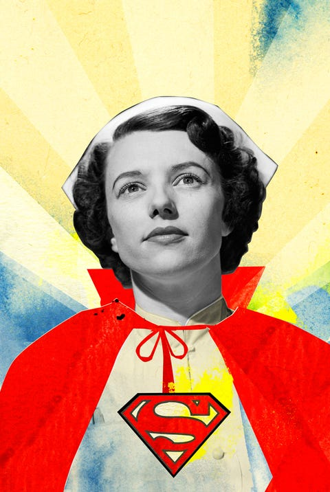

Viajeros del futuro
Viven más adelante en la curva, asomados al vértigo de un poco más tarde. Miro sus rostros, escucho sus voces, intento descifrar sus manos pero no atravieso el enigma que encierran, simplemente porque aún no ha llegado mi momento. Es la potencia del exponente, que no entiende de las rectas en que nosotros trazamos nuestro dinero, nuestros metros cuadrados y los cilindros de nuestros motores; es la fuerza del exponente que todo lo engulle. No por casualidad se escriben tan arriba. Así, cuando vienen de vuelta, al descender la curva que les trae desde el abismo a nuestra superficie, sienten que hablan una lengua que otros no comprenden, que sueñan que quieren gritar y la voz no les brota de su garganta, sienten que hasta con su silencio deben proteger a los que aún no han estado allí.
Son viajeros del futuro.
Y yo miro por mi ventana, hacia ningún lugar, solo para viajar allí. Así viajo desde mi celda, con el pensamiento, que no es igual que llevar los pies por los caminos, si no más bien como mirar la curva y arrojarle mis números, mis renglones, deslizando mis fórmulas por su lomo con curiosidad como si fuera a llevarme al lugar de donde ellos vienen, los viajeros del futuro. No, viajar con el pensamiento no es viajar, es solo calmar el apetito por comprender. Desde joven he comprendido que el motor del saber es la curiosidad, pero solo ahora, que ya no lo soy, voy descubriendo que solo es cierto para el conocer de las cosas, mientras que el conocer de las personas tiene otro motor, que es la admiración.
Muchas veces he pasado por delante de la estación de bomberos luchando contra la voz que asoma para susurrar que envidie su ociosidad, que desprecie su comodidad de esperar a tener que hacer algo. Dentro de cada uno viven muchas voces, pero hay una voz que no se alza más que las demás y, sin embargo, señala qué voces son limpias y cuáles nos arrastran hacia abajo. Solo entonces queda una única voz, la que me dice que esos hombres renuncian a más en una noche que yo en años. Y es que de la tormenta no se sale igual, en eso consiste la tormenta. Intento esquivar la actualidad, lo inmediato, porque no perdura y sus verdades son efímeras, pero esta vez es distinto, porque la guerra contra en coronavirus comienza a parecer una de esas singularidades que ocurren tan solo en algunos siglos. Es la noche en que los que luchan por salvarnos la vida en los hospitales se arrojan al frente de batalla en cada turno, donde el futuro es hoy, donde la curva es un monstruo exponencial que desborda nuestros pequeños mundos lineales. Allí nada se parece a ayer, allí el destino se echa a suertes.
Hay muchas cosas que no sé, pero sé que son. Es fácil viajar con el pensamiento siempre que se observe desde lejos, en números redondos, en términos de países o meses. Pero el instante siempre le resulta escurridizo al pensamiento, ese instante que atrapa la vida entera y que ocurre cuando miras exhausto desde la ventana del último autobús aliviado de que nadie espere en casa. Ocurre cuando sabes que está al borde de irse, pero le sonríes como si no. Ocurre cuando un infectado tose mientras le cuidas. Ocurre cuando te das cuenta de que no podrás ayudar a los dos. Ninguno de esos instantes me corresponde, pero sé que vagan por los tórridos pasillos en que esa gente está luchando. Y yo les pregunto, no por alimentar la duda, si no por intentar comprender: ¿por qué vas a volver? Solo pueden callar con un silencio abrumador como las heladas corrientes que en los polos se hunden hacia el fondo del océano, con la impotencia de quien habla de navegar a quien no conoce el mar.
Medio mundo se ha detenido como ninguno recuerda, esperando en nuestras casas como si nunca dejara de llover. Agunos a regañadientes, algunos medio dormidos, algunos aplauden todos los días a las ocho, otros siguen como si nada. Pero todos vivimos en el pasado de los viajeros del futuro. Mañana volverán al frente de batalla y cuando ya no puedan, volverán a que les atiendan sus compañeros. El amor solo lo es si es incondicional, y ellos dan todo por desconocidos como tú y como yo. Y aún así, sé que a veces andan por los tórridos pasillos de sus hospitales como piratas tan cansados del miedo que se ríen porque ya nada les puede vencer. Por eso yo os admiro y os estoy, por adelantado, agradecido.
A mi hermana y a todos sus compañeros, que luchan por nosotros.
